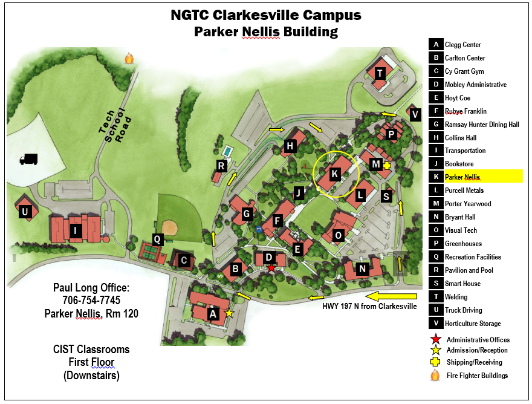

Instructor: Paul Long, M Ed., A+, Net+, CIW Associate
Phone Number:
Office: Parker Nellis,
E-mail:paul.long@northgatech.edu
Email is the best way to contact me as I check email throughout the day, over the weekend, and during holidays.
Office Hours: Are posted outside my office door. I am usually available before and after class. Office hours are an opportunity for you to get to know me and me to know you, to forge a connection with me and for me to connect with you. You can use the time to ask me about my research, my experience, or to seek advice about possible majors or career paths You are encouraged to stop by if you need assistance with any issues or just to chat.

COURSE SYLLABUS
Course Description (from the NGTC Catalog)
Explores the concepts of Hypertext Markup Language (HTML), Cascading Style Sheets (CSS), XML, and HTML 5 following the current standards set by the World Wide Web Consortium (W3C) for developing inter-linking web pages that include graphical elements, hyperlinks, tables, forms, and image maps.
Prerequisites: None
Competency Areas
- Describe HTML 5, CSS 3
- Develop Pages using HTML 5, CSS 3
- Implement Graphical Elements, Hyperlinks, Tables, Forms, Image Maps
- Examine, Compare, and Recognize W3C Standards
Course Overview
Welcome to CIST 1510, Web Development I. A few years ago, I read that hands-on is the best way to learn something. I hope that you will take this opportunity to be as hands-on as possible. Don't worry about making mistakes, that is also part of the learning process, I've certainly made more than my share along the way.
This is an exploratory journey of discovery into the fascinating world of how a web programming and how to keep it running. In this journey, we will look at the internal workings of a web page. We will explore critical thinking, problem solving, troubleshooting, and research as it allies to the preceding items. We will address the central question of this course: How to create/program web pages and web sites?
Of course, I can’t guarantee that it’s going to be your favorite course but it is one of mine. For one thing, you’re going to have to be here about five hours a day twice a week, and I know at least some of you probably aren’t too thrilled about that. For another thing, we’re all going to have to work very hard in this class. I will guarantee, however, that if you work hard, you’ll find that CIST 1510 is one of the most useful courses you’ll take with us. The skills you develop in this class are skills you can use in almost every other course you take at this school.
Like everything else, skills and knowledge improve with practice. The more you work with programs, the better you will get at doing it. The purpose of the course is to give you lots of opportunities to use the skills and apply the knowledge gained by getting hands-on with programming. You will have the opportunity to explore the most recent research on programming located on the Web and apply that in a real world like setting. You’ll be able to understand the basic nature of programming, and learn about communication patterns within them. You’ll gain insight into the role of a person working in the field, and an individual working within an organization. You will gain a deeper knowledge of the critical role of the decision making process relative to this field. This course can help you more deeply understand these systems, so that you can make wise decisions when you are working in this field.
How will you fulfill these promises?
To realize these promises you must take responsibility for your own learning and participate as an active learner. You need to become part of a learning community that we will create through engaging in the discussion of issues that are common in organizations. The best way to learn what IT people do is to spend some time doing what they do. You will spend time experimenting with real PC's, and you will collect information that you will bring to class to share and to enrich our discussion. During the semester you will write reflections many of your experiences as a member of this class. These reflections will help you get more out of the experience and it will help us, you and I, evaluate your learning by providing you with more accurate feedback. During class discussions, I will provide you with more explicit information on how to write these reflections. During class, I will also provide you with information on key concepts and information that will also help you learn. You will also participate in a specialized small group that will research and wrestle with some aspects of a computer.
As you move through the course, you're going to be able address do the following:- Identify HTML 5, CSS 3, and XML
- Construct error-free web pages using validation techniques
- Construct error-free web applications with interlinking pages, graphical images, hyperlinks, tables, forms, and image maps
- Evaluate developed code with W3C standards and make necessary corrections
- Develop graphics using the HTML 5 Canvas
Expectations for Learning
- I expect you to be in class, on time, and prepared. Please have the reading for each class completed before that day’s session.
- I encourage you to participate in class discussions, to ask questions whenever you feel necessary, and to be engaged with our material generally.
- I expect myself to treat you with respect and common courtesy, and I expect you to reciprocate with both me and your classmates.
- On a personal level I have one main expectation for each of you, and I would like you to seriously think about adopting it for yourself: I hope each of you will finish this semester feeling that you have grown as a person.
My own philosophy is that an education should prepare students to understand and deal intelligently with life in the real world. It should teach them to think and read critically, to express themselves clearly, to frame and ask meaningful questions, to support their positions with reliable evidence, and how to solve complex problems. I view teaching as a process of encouraging students to make connections between their real world experiences and the subject being studied. It is important to provide students with hands-on activities in order to make these connections which is the way I learned this stuff. Students should be taught how to conduct independent research, how to evaluate a resource, how to develop what Postman (Postman 1969) calls a “crap detector”, and how to apply that research to their needs.
Since professions in this rapidly changing field are always improving themselves, don't you think you can improve as well? I think you can, and my goal is to help you do just that.
Reading, Writing, and Thinking in the Course
To take charge of your own education, you must be willing to read. We will use the homework as a jumping off point, to give us a common language with which to discuss computers. You will need to read, analyze, and think about the material between each class. There will also be additional reading and research as we wrestle with understanding the nature of this device. Some of this you will do on your own: some will be with a group of classmates. We’ll work on abstracting current research so it can be shared among the class. You will also pursue a topic of special interest and write a paper about that topic (group project). The writing of the paper will help you refine your thinking and understanding. If you do not learn to communicate in words, you cannot formulate fully developed thoughts and will, instead, live by the vague impressions and emotions that often substitute for ideas. By the end of the course, you should be able to make an informed analysis of the field and it's role in your life: about the communication involved, about the implications of organizational decisions on you and your life; and about the ethical responsibility you and the organization mutually share. It is a big task, and it will take all our efforts to achieve it.
Requirements
The course requires the attendance of course lectures and practical lab demonstration. It requires out of class preparation for classes on a per class basis. You are expected to demonstrate the required knowledge/proficiency in the subject matter by successfully completing written and/or practical tests/projects.
A grade of C or better is required to successfully pass this class.
Instructional Methodology
In order to better provide you a convenient time to take the class, additional instructional materials will be available online. However, the class is hybrid because you will need to come in to the labs to complete most hands-on labs and also to receive directed assignments to re-enforce reading assignments.The instructional methodology will include you completing weekly reading assignments in the text and the additional instructional material included in the online presentations, taking tests, working on a group class presentation, preparing Work Ethics exercises and completing a course portfolios of all work completed during the course. The portfolio and reflection statement to be included with the portfolio allow you to reflect on their work/efforts in the learning environment. Assignments will be sent to the instructor via email or turned into the instructor directly. Communication with you will be continual as required and will be via email or during class time. Additional help will be available to you if needed outside of class. The classroom and lab room will be made available for your use at times other than scheduled class time.
Requirements
The course requires the attendance of course lectures and practical lab demonstration. Out of class work will be assigned each week, as will out of class preparation for classes. You are expected to demonstrate knowledge, understanding and proficiency in the subject matter by successfully completing programming assignments and practical project.
Materials, Supplies, Etc.
- Thumb Drive
- Pencil/ Pen and Paper
Required Textbook
None
Course Policies
Attendance
One of the keys to your success in college is class attendance. What happens in class is unique and is not easily replaced by copying notes or reading a textbook.
You are responsible to make arrangements to make up all work missed.
The attendance policy is set forth in the North Georgia Technical College Student Handbook. I expect you to attend every class, arrive on time, and prepared—as you no doubt expect of me. If you can not attend, you should notify me of your absence in advance, either by email (preferred) or phone (leave a message if I don't answer). You are encouraged to refer to the Student Handbook for further information regarding the "Drop" Policy.
A warning will be issued before termination for non-attendance. The days absent for a warning and termination are as follows:
| Class Meeting Per Week | Absences Before Warning | Absences Before Termination |
| 4 | 2 | 4 |
| 3 | 2 | 3 |
| 2 | 1 | 2 |
| 1 | 1 | 2 |
If you are absent for more than three days during the semester, your grade may suffer—not necessarily because you were absent, but because by being absent, you will have missed course content and classroom experiences that you need to have in order to improve your skills.
Students anticipating a problem complying with the attendance policy should contact the instructor in advance or provide notification as soon as possible, the preferred method to do this is via email. It is your responsibility to arrange for make-up work at the convenience of the instructor. Nothing will be made up without a legitimate excuse. The final exam will not be made up.
Email and Internet
It is important that we be able to communicate with each other both in and outside of class. Email is an efficient, effective, relatively painless way to do this. For this reason, I am going to ask that you check your NGTC email account at least once a day. I, of course, will do the same. That way, we should have no trouble communicating.
Speaking of email, I have no objection to your using the classroom computers to check your email or surf the Web before and after class, but I am going to ask you to refrain from doing so during our scheduled time together. From the time I start class until the time I dismiss it, you need to be engaged in the activities planned for the day. Generally speaking, these will not include emailing your friends and family or surfing the web. I hope I won’t need to say any more about this. Thanks for your cooperation.
Late Work
All work is due at the start of class by the day the material is discussed in class, so that you can be part of the discussion. Please do not plan to print, organize, staple, etc. at that time. Do this in advance! If you are absent, please arrange to turn in your work before as soon as possible. I reserve the right to penalize late work appropriately, depending on when the work was assigned, when the assignment is submitted, and how frequently this happens. You are strongly encouraged not to wait until the last minute.
Grading
There will be regular projects (Apply Your Knowledge), quizzes, case study (Java Jam) and a final project (You must make at least 70% on the project to pass this course). Comments in the code are required for all code submitted! See example.
- The comprehensive Final Project will count 40% of your grade, the code must pass the HTML and CSS validators.
- Class/Home work will count for 50%; of your grade, the code must pass the HTML and CSS validators.
- The remaining 10% will be based on class/lab participation.
You will not get a passing grade under class participation if you only do the written assignments but do not contribute to class discussions and class activities. Nothing will be made up without a legitimate excuse. The final exam will not be made up. No extra credit will be given unless all course work is turned in to the Instructor.
This course is not self paced so you can achieve an "A" as long as your work is turned in in a timely manner.
Final Project |
40% |
Class/Home work |
50% |
Class/Lab Participation |
10% |
Total |
100% |
Make sure your name and exercise number appear in the upper-left corner. If an exercise has multiple sheets, then staple them together. Do not staple different assignments together. Disorganized assignments (Pages out of order, mislabeled, unreadable, etc.) will receive a grade of zero. If there are multiple sheets are to be handed in, then sequence them according to the order you were told to print them in the exercise.
Class Participation
Class participation is the single most important aspect of the course. You are expected to actively participate in every class with a positive attitude and to treat your classmates and teacher with respect. You are expected to get actively involved with the class activities, to critically analyse the proposed problems and situations, to actively participate in small group discussions, to contribute your analysis to the whole class, and to complete all reading and written assignments. You will also conduct oral presentations throughout the course. Class participation also entails asking meaningful questions in the lectures, answering questions, and volunteering comments related to the content of the lectures and the class activities. I will also call on you throughout the course to answer questions or to provide your opinion. We will resort to a broad range of class activities. Some will be conducted individually and others in small groups. Many class activities will include the writing and editing of short essays. Other activities will deal with projects and presentations. You are expected to be prepared for every class, i.e., you need to do the required readings for each class, and other homework assignments. You have to keep all your class activities, together with these materials in a portfolio. Even if you have a laptop, you must also bring a notebook and pens and be prepared to hand in written class assignments to me when required.
On several occasions throughout the course, I will ask you to hand in the class activities or the entire portfolio for me to give you formative feedback. It is recommended that you take the initiative and come to my office during my office hours to discuss your class performance several times throughout the course. Your class participation must reflect that you have done the required readings and that you have thought about what you read. Simply talking in class is not enough to get a good grade under this evaluation component. But, if you do not talk and participate in class, you will not receive any credit at all. Please note that the written assignments and quizzes are conceived to help you prepare to talk in class and fully participate in the class activities. You will not get a passing grade under class participation if you only do the written assignments but do not contribute to class discussions and class activities. I expect that active class participation will foster, among many other skills, your oral communication and presentation skills. Class attendance is a prerequisite to obtain the corresponding percentage of the grade under this category. I will evaluate your participation every class. If you miss class you will not receive any kind of credit for that missed class regardless of the reason for your absence, even if you decide to complete the written class activity.
Evaluation criteria for class participation
I will assess whether and how well you have achieved the learning outcomes of the course for the class participation component of the grade according to the participation rubric.
Extensions, waivers, reschedules, rewrites, make-ups, and extra-credit activities are considered privileges, given on a case by case basis and as a matter of courtesy. For further clarification, I may or may not grant them or I may grant them to some of you and not to others, depending on a number of factors. In general, I will only grant privileges in exceptional circumstances. The following are examples of circumstances that may never be considered exceptional: internet outages, computer or printing problems, compliance with a job supervisor‟s request to do overtime or an extra shift, or sports commitments. You must plan ahead in order to comply with all the course requirements. This means, among other things, not starting your work the night before the deadline. You must request a privilege in writing. If I grant it, you must keep a copy of the privilege given by me in writing. Privileges not requested in writing and not given in writing are not valid.
Grading Scale
A 90 - 100%B 80 - 89%
C 70 - 79%
D 60 - 69%
F Below 60%
Computer Matters
In this class, the wise use of technology means saving everything—and saving it more than once. Truly wise students will save ALL work in at least three places. Possibilities include:
- your flash drive
- your email
- the desktop of your PC
Classroom Manners
Most of you have been at the University for at least a semester now, and you know how to behave in a university classroom. Please behave that way here. You also have a pretty good idea of how an instructor should conduct herself, and I promise to do that as well. Let’s all be respectful of ourselves and each other. If we do that, our classroom will be a place where we’re all comfortable; that’s the essence of civility.
Intellectual Dishonesty and Cheating
Intellectual dishonesty involves the theft of other people’s words or ideas, and that’s unacceptable in this and all university courses. Cheating is letting someone else do your work for you. That’s unacceptable as well. If you don’t do your own thinking and writing, you can hardly expect to improve as a thinker or writer. Therefore, I expect that the writing you submit to me will be your own work. That’s the only way we can tell what kind of progress you’re making!
COMPUTER USE POLICY
The Computer Use Policy was given to you at the departmental orientation your first semester as a student in the department. A copy of the policy is in a pocket folder located at the front of each of the computer labs for your reference.
Safety
The safety procedures and rules are posted on the bulletin boards in the upstairs and downstairs hallways and at the front of each of the classrooms. Located in the same area is the evacuation plan. The safety procedures are in the packet of information that was given to you at the departmental orientation your first quarter as a student. Be sure to view the disaster drill information.
Syllabus is subject to change without notice!